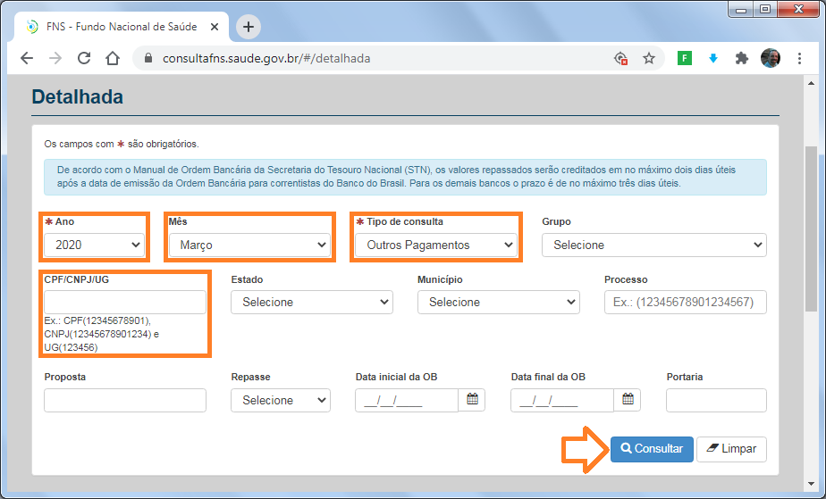
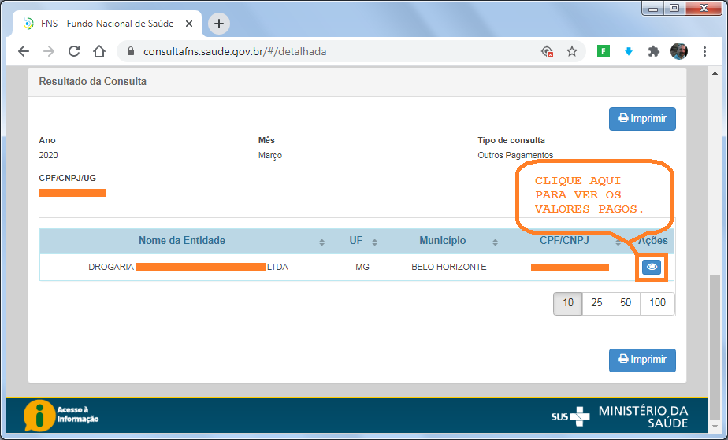
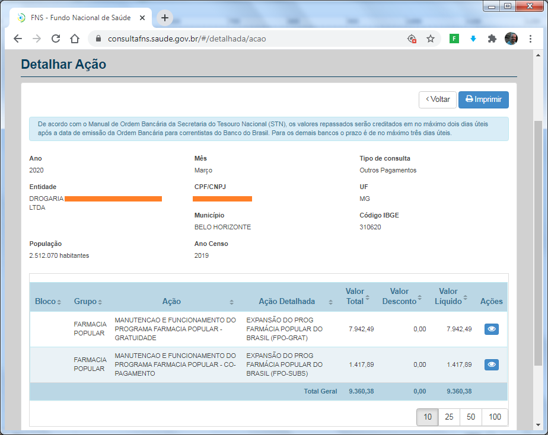

Guia de consulta de pagamentos da Farmácia Popular
Para consultar os pagamentos das vendas de Farmácia Popular acesse o link do Fundo Nacional de Saúde abaixo e siga as instruções a seguir:
Para consultar os pagamentos das vendas de Farmácia Popular acesse o link do Fundo Nacional de Saúde abaixo e siga as instruções a seguir:link: FNS - Consulta detalhada
Ao acessar os site do FNS no link acima e informe os seguintes dados:
- *Ano;
- Mês em que o pagamento foi efetuado;
- *Tipo de consulta: Outros Pagamentos;
- CNPJ (somente números);
- Clique no botão consultar;
- Caso haja pagamento no mês selecionado, os dados da sua empresa serão exibidos no quadro de baixo. Clique no botão de visualização (parece um olho);
- Logo abaixo você verá os valores pagos no mês selecionado.
Se desejar pesquisar pagamentos de outros meses, basta clicar no botão "Voltar" dentro da própria página, à direita no alto.
Caso prefira, pode ver nas imagens abaixo como é o processo descrito acima.imagem-fns01

*Ano;
Mês em que o pagamento foi efetuado;
*Tipo de consulta: Outros Pagamentos;
CNPJ (somente números);
Clique no botão consultar.
imagem-fns02

Caso haja pagamento no mês selecionado, os dados da sua empresa serão exibidos no quadro de baixo. Clique no botão de visualização (parece um olho);
Logo abaixo você verá os valores pagos no mês selecionado.
imagem-fns03

Logo abaixo você verá os valores pagos no mês selecionado.
Se desejar pesquisar pagamentos de outros meses, basta clicar no botão Voltar dentro da própria página, à direita no alto.
O que diz a lei sobre os pagamentos:
"Os pagamentos do Programa Aqui Tem Farmácia Popular são realizados por competência mensal, considerando-se do 1º ao último dia do mês, e devem ser efetivados pelo Fundo Nacional de Saúde até o último dia do mês subsequente às vendas.
Os valores repassados estão disponíveis para consulta no site do FNS, na aba “Consulta Detalhada”, devendo ser indicado obrigatoriamente o ano, tipo de consulta (outros pagamentos) e o CNPJ.
Os valores referentes às autorizações consolidadas podem ser verificados no portal, com acesso por meio de usuário e senha da empresa. O sistema realiza a busca por faixa de períodos de 05 dias, permitindo consultar vendas retroativas.
É importante ressaltar que a PCR nº 05/2017 seção I do anexo LXXVIII prevê: “Art. 29. O atesto dos pagamentos terá por base as informações geradas pelo Sistema Autorizador DATASUS.
Parágrafo único. Caso as farmácias e drogarias verifiquem possíveis divergências nos valores de repasse do Ministério da Saúde, deverão solicitar análise do pagamento ao DAF/SCTIE/MS, no prazo máximo de 90 (noventa) dias, a contar da data da ordem bancária de pagamento, indicando quais autorizações estão divergentes”.
O que ocorre na pática:
Como no exemplo das imagens acima, os pagamentos efetuados em Março, são referentes às vendas de Janeiro.
Caso o mês de referência de pagamento fosse Junho, as seria referente às vendas de Abril.
É assim que funciona. Os pagamentos são autorizados no mês subsequente às vendas e pagos no mês seguinte.
Ex.: Vendeu em Abril; o pagamento foi autorizado em Maio; o numerário foi creditado na conta em Junho.